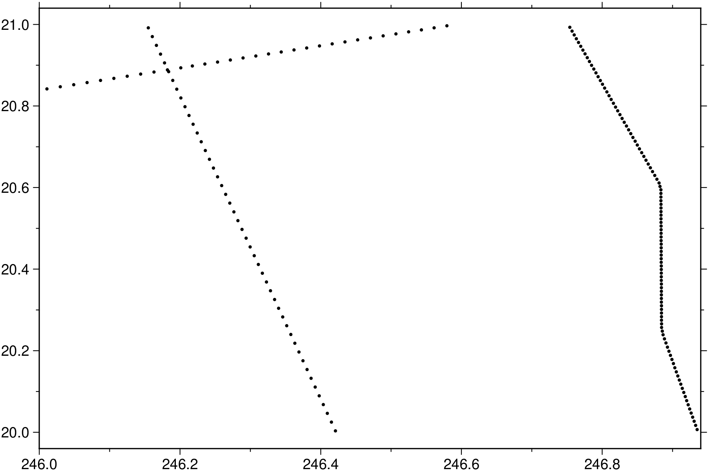
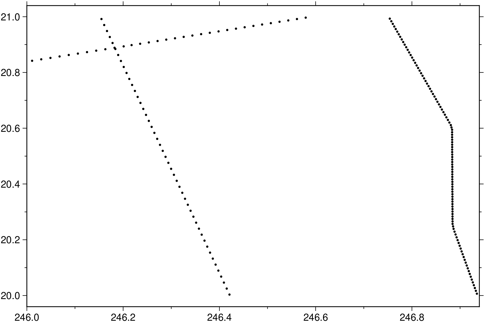

using GMT
D = gmtselect("@ship_15.txt", region=(246,247,20,21));
plot(D, marker=:point, show=true)
Select data table subsets based on multiple spatial criteria
select is a filter that reads (x, y) or (longitude, latitude) positions from the first 2 columns of infiles [or standard input] and uses a combination of 1-7 criteria to pass or reject the records. Records can be selected based on whether or not they are 1) inside a rectangular region (region [and proj]), 2) within dist km of any point in pointfile, 3) within dist km of any line in linefile, 4) inside one of the polygons in the polygonfile, 5) inside geographical features (based on coastlines), 6) has z-values within a given range, or 7) inside bins of a grid mask whose nodes are non-zero. The sense of the tests can be reversed for each of these 7 criteria by using the reverse option. See option yx on how to read (y,x) or (latitude,longitude) files (this option affects all module input data). Note: If no projection information is used then you must supply colinfo=:g to tell select that your data are geographical.
-A or area : – area=(min_area[,min_level,max_level]), river_lake=true, lake=true, antarctica_ground=true, skip60S=true, skipN60S=true, percent=pct)
Features with an area smaller than min_area in km^2 or of hierarchical level that is lower than min_level or higher than max_level will not be plotted [Default is 0/0/4 (all features)]. Level 2 (lakes) contains regular lakes and wide river bodies which we normally include as lakes; use river_lake=true to just get river-lakes or lake=true to just get regular lakes. By default we select the ice shelf boundary as the coastline for Antarctica; use antarctica_ground=true to instead select the ice grounding line as coastline. For expert users who wish to print their own Antarctica coastline and islands via plot you can use skip60S=true to skip all GSHHG features below 60S or skipN60S=true to instead skip all features north of 60S. Finally, append percent=pct to exclude polygons whose percentage area of the corresponding full-resolution feature is less than pct.
C or dist2pt : – dist2pt=(pts=pointfile, dist=dist) | dist2pt=(pts=(lon,lat), dist=dist)
Pass all records whose location is within dist of any of the points in the ASCII file pointfile or a in-memory matrix. If dist is zero then the 3rd column of pointfile must have each point’s individual radius of influence. If you only have a single point then you can specify dist2pt=(pts=(lon,lat), dist=dist) instead of pointfile. Distances are Cartesian and in user units; specify colinfo=:g to indicate spherical distances and append a distance unit, even if the distance specified is 0. (see [Units]). Alternatively, if region and proj are used then geographic coordinates are projected to map coordinates (in cm, inch, or points, as determined by PROJ_LENGTH_UNIT) before Cartesian distances are compared to dist.
D or res or resolution : – res=:full | res=:auto
Selects the resolution of the data set to use full, high, intermediate, low, and crude. The resolution drops off by 80% between data sets. The default is res=:auto, which chooses to automatically select the best resolution given the chosen map scale.
E or boundary : – boundary=:f|:n|:fn
Specify how points exactly on a polygon boundary should be considered. By default, such points are considered to be inside the polygon. Append :f and/or :n to change this behavior for the polygon and/or mask options, respectively, so that boundary points are considered to be outside.
F or polygon : – polygon=polygonfile | polygon=matrix
Pass all records whose location is within one of the closed polygons in the multiple-segment file polygonfile (or GMTdataset with in-memory data). For spherical polygons (lon, lat), make sure no consecutive points are separated by 180 degrees or more in longitude. Note that polygonfile must be in ASCII.
G or gridmask : – gridmask=“grid”
Pass all locations that are inside the valid data area of the gridR, which can be either a file name or an in-memory grid object. Nodes that are outside are either NaN or zero.
I or invert or reverse : – invert=:c|f|l|r|s|z
Reverses the sense of the test for each of the criteria specified:
J or proj or projection : – proj=
Select map projection. More at [proj](../common_opts/opt_J.html)
L or dist2line : – dist2line=(line=“linefile”, dist=dist [,ortho=true]) | dist2line=(line=[pt1; pt2], dist=dist [,ortho=true])
Pass all records whose location is within dist of any of the line segments in the ASCII multiple-segment file linefile or in-memory matrix or GMTdataset. If dist is zero then we will scan each sub-header in the linefile for an embedded -D dist setting that sets each line’s individual distance value. Distances are Cartesian and in user units; specify colinfo=:f to indicate spherical distances append a distance unit (see [Units]). Alternatively, if region and proj are used then geographic coordinates are projected to map coordinates (in cm, inch, m, or points, as determined by PROJ_LENGTH_UNIT) before Cartesian distances are compared to dist. Use ortho=true to ensure only points whose orthogonal projections onto the nearest line-segment fall within the segments endpoints [Default considers points “beyond” the line’s endpoints.
N or mask : – mask=maskvalues
Pass all records whose location is inside specified geographical features. Specify if records should be skipped (s) or kept (k) using 1 of 2 formats:
Default is (:s,:k,:s,:k,:s) (i.e., (:s,:k)), which passes all points on dry land.
R or region or limits : – limits=(xmin, xmax, ymin, ymax) | limits=(BB=(xmin, xmax, ymin, ymax),) | limits=(LLUR=(xmin, xmax, ymin, ymax),units=“unit”) | …more
Specify the region of interest. More at [limits](../common_opts/opt_R.html). For perspective view view, optionally add zmin,zmax. This option may be used to indicate the range used for the 3-D axes. You may ask for a larger w/e/s/n region to have more room between the image and the axes.
V or verbose : – verbose=true | verbose=level
Select verbosity level. More at [verbose](../common_opts/opt_V.html)
Z or in_range : – in_range=(min,max) | in_range=min
Pass all records whose 3rd column lies within the given range or is NaN (use -s to skip NaN records). If max is omitted then we test if z equals min instead. This means equality within 5 ULPs unit of least precision. Input file must have at least three columns. To indicate no limit on min or max, specify a hyphen (-). If your 3rd column is absolute time then remember to supply colinfo=“2T”. To specify another column, append “+ccol”. Be warned, these last options imply that the arguments to this option are all passed as a string. Note: repeating this option with different tests is not yet implemented.
a or aspatial : – aspatial=??
Control how aspatial data are handled in GMT during input and output. More at
bi or binary_in : – binary_in=??
Select native binary format for primary table input. More at
bo or binary_out : – binary_out=??
Select native binary format for table output. More at
di or nodata_in : – nodata_in=??
Substitute specific values with NaN. More at
e or pattern : – pattern=??
Only accept ASCII data records that contain the specified pattern. More at
f or colinfo : – colinfo=??
Specify the data types of input and/or output columns (time or geographical data). More at
g or gap : – gap=??
Examine the spacing between consecutive data points in order to impose breaks in the line. More at
h or header : – header=??
Specify that input and/or output file(s) have n header records. More at
i or incol or incols : – incol=col_num | incol=“opts”
Select input columns and transformations (0 is first column, t is trailing text, append word to read one word only). More at incol
o or outcol : – outcol=??
Select specific data columns for primary output, in arbitrary order. More at
q or inrows : – inrows=??
Select specific data rows to be read and/or written. More at
s or skiprows or skip_NaN : – skip_NaN=true | skip_NaN=“<cols[+a][+r]>”
Suppress output of data records whose z-value(s) equal NaN. More at
w or wrap or cyclic : – wrap=??
Convert input records to a cyclical coordinate. More at
yx : – yx=true
Swap 1st and 2nd column on input and/or output. More at
Units
For map distance unit, append unit d for arc degree, m for arc minute, and s for arc second, or e for meter [Default unless stated otherwise], f for foot, k for km, M for statute mile, n for nautical mile, and u for US survey foot. By default we compute such distances using a spherical approximation with great circles (-jg) using the authalic radius (see PROJ_MEAN_RADIUS). You can use -jf to perform “Flat Earth” calculations (quicker but less accurate) or -je to perform exact geodesic calculations (slower but more accurate; see PROJ_GEODESIC for method used).
Unless you are using the yx option, selected ASCII input records are copied verbatim to output. That means that options like colinfo=:oT and settings like FORMAT_FLOAT_OUT and FORMAT_GEO_OUT will not have any effect on the output. On the other hand, it allows selecting records with diverse content, including character strings, quoted or not, comments, and other non-numerical content.
If options dist2pt or dist2line are selected then distances are Cartesian and in user units; use colinfo=:g to imply spherical distances in km and geographical (lon, lat) coordinates. Alternatively, specify region and proj to measure projected Cartesian distances in map units (cm, inch, or points, as determined by PROJ_LENGTH_UNIT).
This program has evolved over the years. Originally, the region and proj were mandatory in order to handle geographic data, but now there is full support for spherical calculations. Thus, proj should only be used if you want the tests to be applied on projected data and not the original coordinates. If proj is used the distances given via dist2pt and dist2line are projected distances.
Segment headers in the input files are copied to output if one or more records from a segment passes the test. Selection is always done point by point, not by segment. That means only points from a segment that pass the test will be included in the output. If you wish to clip the lines and include the new boundary points at the segment ends you must use gmtspatial instead.
To only return the data points from the remote file @ship_15.txt that lie within the region between longitudes 246 and 247 and latitudes 20 and 21, try:

To return all the points except those inside that square, use:
To extract the subset of data set that is within 300 km of any of the points in pts.txt but more than 100 km away from the lines in lines.txt, run
Here, you must specify colinfo=:g so the program knows you are processing geographical data.
To keep all points in data.txt within the specified region, except the points on land (as determined by the high-resolution coastlines), use
To return all points in quakes.txt that are inside or on the spherical polygon lonlatpath.txt, try
To return all points in stations.txt that are within 5 cm of the point in origin.txt for a certain projection, try
To return all points in quakes.txt that are inside the grid topo.nc where the values are nonzero, try
The coastline database is GSHHG (formerly GSHHS) which is compiled from three sources: World Vector Shorelines (WVS, not including Antarctica), CIA World Data Bank II (WDBII), and Atlas of the Cryosphere (AC, for Antarctica only). Apart from Antarctica, all level-1 polygons (ocean-land boundary) are derived from the more accurate WVS while all higher level polygons (level 2-4, representing land/lake, lake/island-in-lake, and island-in-lake/lake-in-island-in-lake boundaries) are taken from WDBII. The Antarctica coastlines come in two flavors: ice-front or grounding line, selectable via the area option. Much processing has taken place to convert WVS, WDBII, and AC data into usable form for GMT: assembling closed polygons from line segments, checking for duplicates, and correcting for crossings between polygons. The area of each polygon has been determined so that the user may choose not to draw features smaller than a minimum area (see area); one may also limit the highest hierarchical level of polygons to be included (4 is the maximum). The 4 lower-resolution databases were derived from the full resolution database using the Douglas-Peucker line-simplification algorithm. The classification of rivers and borders follow that of the WDBII. See The Global Self-consistent, Hierarchical, High-resolution Geography Database (GSHHG) for further details.
To determine if a point is inside, outside, or exactly on the boundary of a polygon we need to balance the complexity (and execution time) of the algorithm with the type of data and shape of the polygons. For any Cartesian data we use a non-zero winding algorithm, which is quite fast. For geographic data we will also use this algorithm as long as (1) the polygons do not include a geographic pole, and (2) the longitude extent of the polygons is less than 360. If this is the situation we also carefully adjust the test point longitude for any 360 degree offsets, if appropriate. Otherwise, we employ a full spherical ray-shooting method to determine a points status.